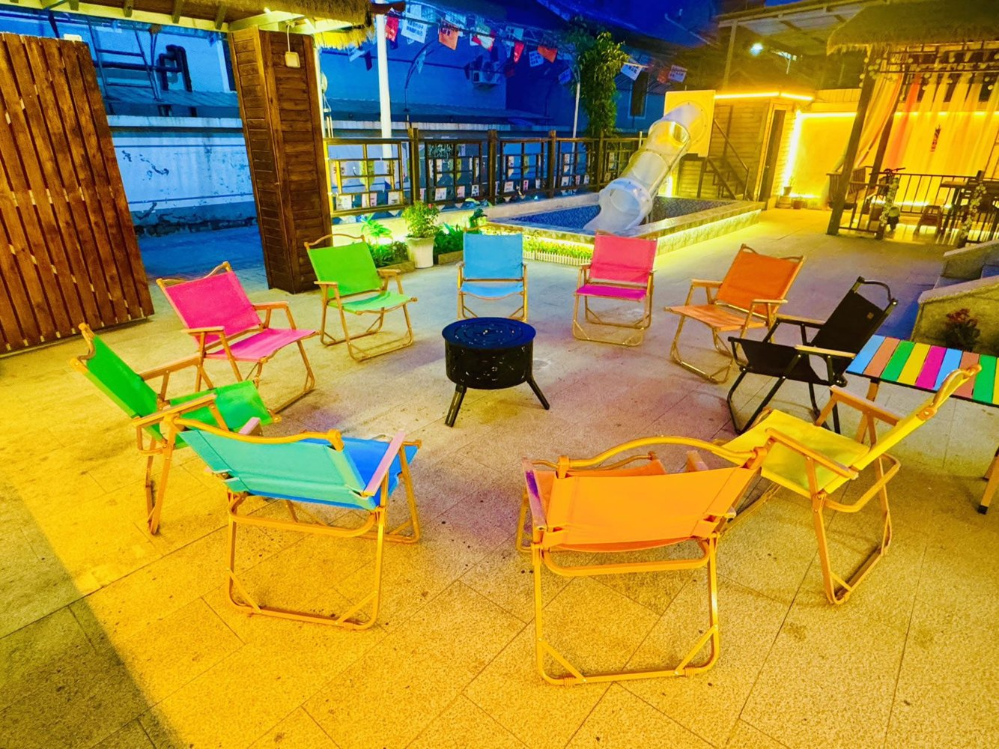
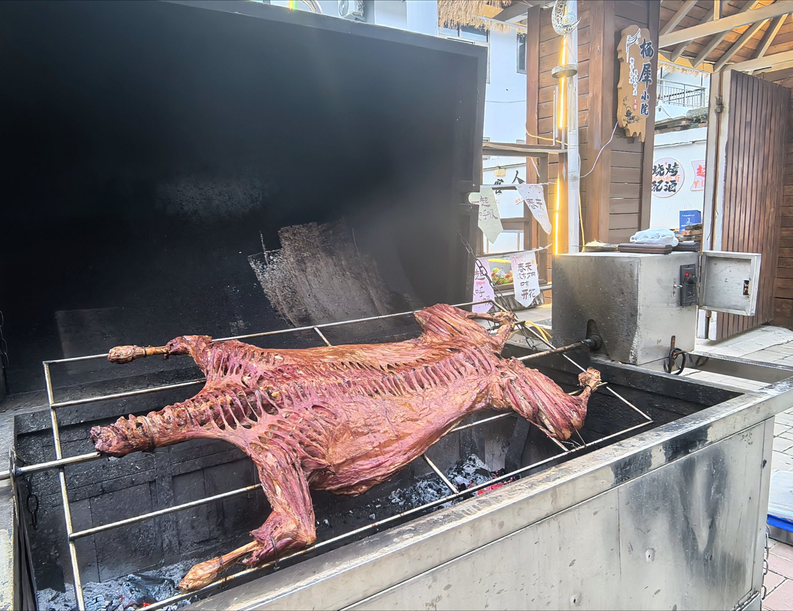

夏天的十渡
夏天来十渡，白天玩水，晚上回小院
夏天的十渡最有吸引力的地方，是山、水和夜晚的小院。白天可以去拒马河、漂流、玻璃栈道、蹦极、飞车小镇，傍晚看山谷和河水，晚上回栖犀小院烧烤、玩水、聊天。

夏天的十渡，适合慢一点玩
十渡夏天可以很热闹，也可以很松弛。热闹的是漂流、蹦极、玻璃栈道、卡丁车和真人CS；松弛的是拒马河边的风、山谷里的傍晚和小院里的夜晚。
如果只是赶景点，很容易累。如果把住宿选在十渡核心区，白天出去玩，晚上回院子休息，整个两天一晚会更像度假，而不是赶路。


白天怎么玩：玩水、漂流、山谷和高空项目
晚上怎么玩：回栖犀小院，把时间留给院子
夏天来十渡，晚上不一定要继续找项目。栖犀小院是独门独院，共7间客房，均带独立卫浴，可住约17-20人。院内有烧烤、儿童戏水泳池、KTV、麻将棋牌、免费停车和充电车位。
对朋友聚会来说，晚上可以烧烤、唱歌、打麻将、聊天；对亲子家庭来说，孩子可以在院子里玩水，大人不用一直盯着赶行程。夏天的十渡，真正舒服的一段，往往是玩完景区回到院子的晚上。




夏天住十渡，怎么安排不累
夏天的十渡适合谁来
亲子家庭适合来玩水、河边散步和轻量景区；朋友聚会适合漂流、飞车小镇、真人CS和包院烧烤；情侣和小团队适合看山谷、坐缆车、走玻璃栈道，晚上住进安静一点的小院。
栖犀小院的优势，是把十渡的白天玩法和晚上的院子生活接在一起。白天玩景区，晚上不用再找第二个地方，回院子就能继续度假。
常见问题
夏天去十渡主要玩什么？
夏天十渡主要玩拒马河、漂流、玻璃栈道、蹦极、缆车、飞车小镇、真人CS和山水观景。建议按同行人群选1-2个重点项目。
夏天十渡适合住一晚吗？
适合。住一晚可以避开当天往返的疲劳，把傍晚和晚上留给拒马河、小院烧烤和休息。
栖犀小院夏天适合包院吗？
适合。小院可住约17-20人，有烧烤、儿童戏水泳池、KTV、麻将棋牌和公共空间，适合朋友、亲子和多人包院。